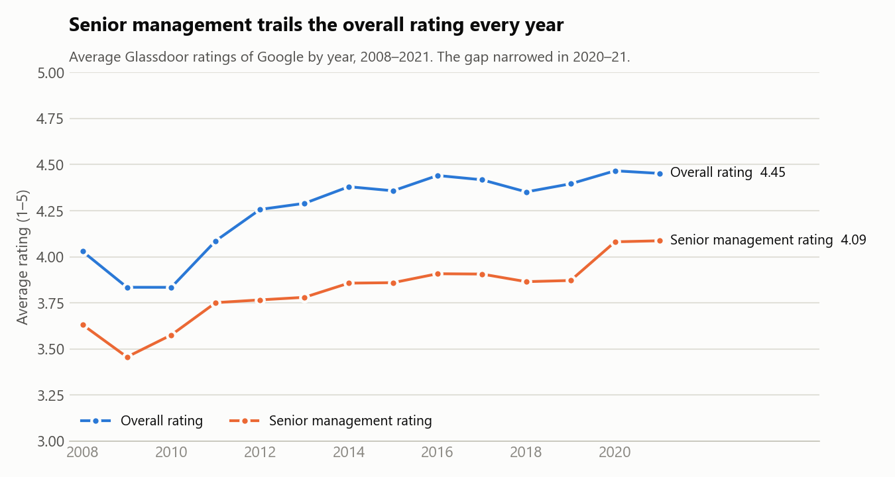
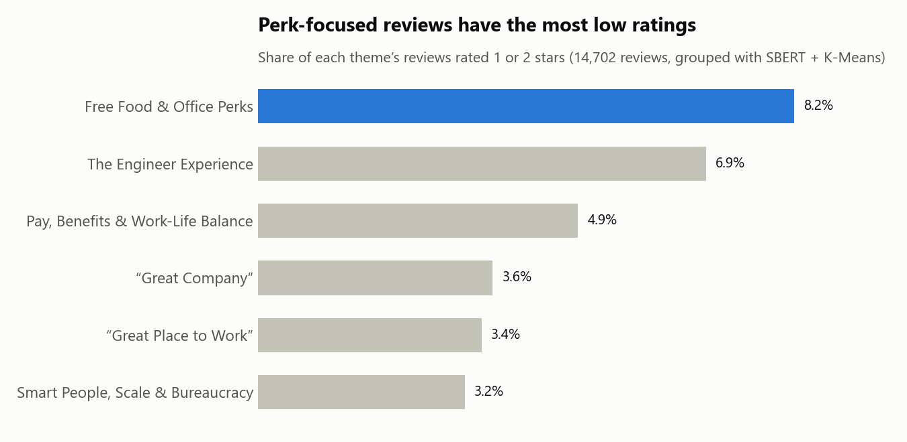

Project · Text Mining & NLP
Inside the Search Giant
What do employees really say about working at Google? I analyzed 14,702 Glassdoor reviews (2008–2021) to find the themes behind employee sentiment.
Python · pandas · TF-IDF · SBERT · K-Means clustering · GBA 6410, Summer 2026
Approach
I cleaned and tokenized the review text, then compared two ways of representing it: TF-IDF (word counts) and SBERT (sentence embeddings that capture meaning). Using SBERT, I grouped the reviews into six themes with K-Means clustering, then compared ratings across themes and over time.
Key insights



Data
Glassdoor Job Reviews dataset (public domain, CC0), filtered to Google: 15,995 raw reviews, 14,702 after cleaning. No scraping was performed.
Summary
Overall, Google employees are very positive. Reviews average 4.39 out of 5 stars, and pay and benefits are the company's strongest area. The clearest weak spot is senior management, which ranked lowest of six job areas and trailed the overall rating every year from 2008 to 2021. That gap began to close in 2020–21, a trend worth watching. Reviews focused on free food and office perks carried the most low ratings, which suggests perks alone don't drive satisfaction.
For an employer, the takeaway is to keep investing in leadership, since that is where employee sentiment has the most room to grow. Methodologically, the project showed that sentence embeddings (SBERT) make it possible to group thousands of free-text reviews into clear themes and to connect what employees write with how they rate the company.